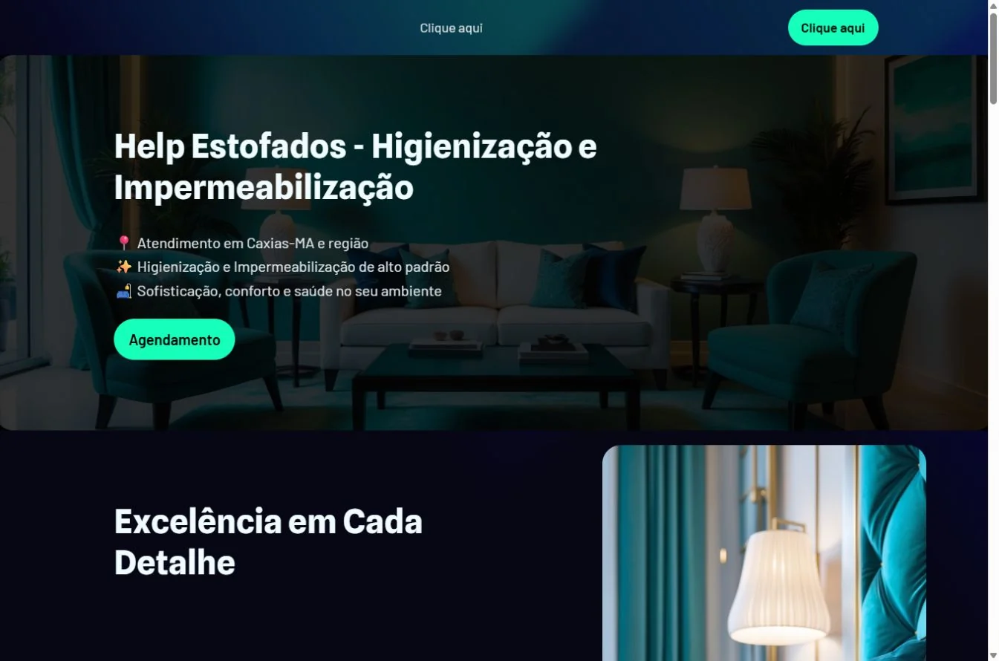
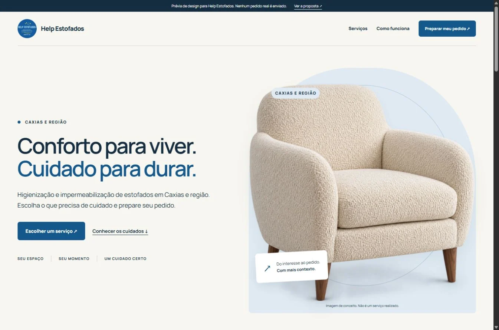

Leitura confortável
Títulos claros, margens generosas e uma composição que se adapta do celular à tela grande.
Uma ideia feita para Help Estofados
Uma nova experiência para apresentar casa, carro e proteção de estofados. E começar cada orçamento com as informações certas.

01 / O que pode ficar mais simples
O site atual já apresenta uma oferta completa, de sofás a interiores de veículos. O botão de agendamento leva direto ao WhatsApp, sem uma etapa para organizar o pedido.
Manter a força da marca e criar dois caminhos claros: cuidado residencial e cuidado automotivo. A pessoa escolhe a peça e chega à conversa com um resumo.
O ponto de partida são os canais públicos. A rotina real, a cobertura e os serviços atuais serão confirmados com vocês. A proposta é facilitar a conversa, sem prometer resultados de vendas.
02 / Uma mudança visível
Compare a primeira tela do site atual com esta direção. O foco passa a ser serviço, região e próximo passo.


Site atualPropostaArraste a divisória ou use as setas do teclado. Capturas na mesma resolução. A proposta preserva a marca; conteúdo final será validado com a equipe.
03 / A ideia já pode ser experimentada
Escolha um serviço, preencha um pedido de exemplo e veja o resumo. Nesta demonstração, nenhuma solicitação é enviada à empresa.
04 / Design que ajuda a decidir
Títulos claros, margens generosas e uma composição que se adapta do celular à tela grande.
Azul forte, amarelo e brilhos inspirados na marca atual. Uma tipografia mais firme para uma comunicação direta.
O serviço conduz ao pedido. Uma resposta visual confirma cada ação, com respeito à preferência de movimento reduzido.
Uma base para a busca local
Preparação de títulos, descrições, sitemap e orientação de configuração do Search Console.
Indexação e posições dependem do Google. Nenhuma posição ou prazo é garantido.
⌕ higienização de sofá em Caxias MA
Help Estofados · Caxias e regiãoConheça os serviços, informe sua necessidade e prepare um pedido de avaliação para a equipe.
Simulação visual de resultado de busca. Domínio e exibição final a definir.06 / Uma entrega objetiva
Começar por uma página bem feita e um caminho claro para orçamento. O escopo é alinhado antes de iniciar.
R$ 990
Pagamento único.
Sem mensalidade obrigatória.
Serviços, região, orientação de fotos, dúvidas e formulário que prepara o resumo para o WhatsApp. Layout para celular e computador, imagens otimizadas, favicon e SEO inicial.
Duas rodadas de ajustes antes da publicação. Prazo combinado após validar o conteúdo e receber os materiais. Arquivos e contas contratadas em nome da empresa.
Verificação e correções da implementação entregue. Domínio, hospedagem e serviços de terceiros são separados e aprovados antes de qualquer contratação.
O projeto é um site de uma página com até seis seções. O formulário organiza o pedido no navegador e prepara a mensagem para o WhatsApp. As fotos são enviadas na própria conversa. Não inclui painel administrativo, banco de dados, agenda automática, pagamento online, gestão de clientes ou manutenção contínua.
Novos conteúdos e funcionalidades podem ser orçados separadamente. A empresa valida serviços, cobertura, textos, identidade e imagens. As imagens geradas nesta apresentação são conceitos de direção visual e podem ser substituídas por fotos autorizadas. Não existe contratação ou parceria presumida.
07 / Agora entra a experiência de vocês
A prévia é um ponto de partida. Quero entender quais perguntas se repetem, o que falta no pedido e como a equipe prefere receber essas informações.
higorselvino0@gmail.com ↗